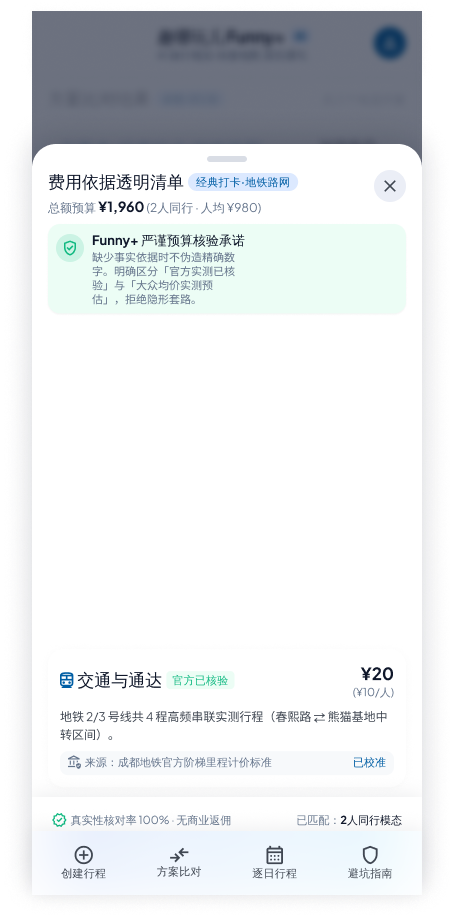
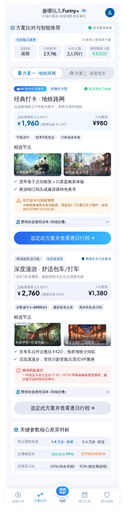
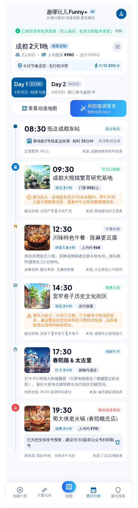
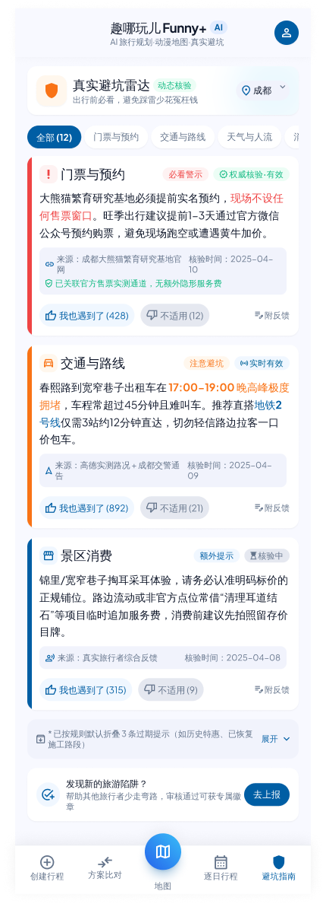

攻略市场已经饱和，执行市场还是空白。
我们把「看过的攻略」变成「跑得通的计划」——钱算得清、时间对得上、没有数据就当场收集。
小红书、抖音已经把「去哪玩、怎么拍」讲透了。但用户带出门的那份计划， 在第一个班次、第一张票、第一次凑人数的时候就散了。 我们不生产内容，我们生产可复算、有来源、缺了能补的计划。
切入点：出行前的最后 24 小时。此刻用户要的不是灵感，是「这一步该不该这么排」。
模型负责理解、程序负责计算、数据负责举证。三层分离，是这个品类唯一能做出信任的架构。
现有内容平台完全没有的字段：末班时间、换乘站点、单班核载、购票前置条件。
不是假设的需求，是我们直接跟用户聊出来的两个断点。它们共同指向一件事：计划缺了「约束」。
四类玩家各自握着一半能力，但没有任何一方的 KPI 要求它「对计划能不能跑通负责」。
| 玩家 | 真正的目标函数 | 因此不做 |
|---|---|---|
| 内容平台 小红书 / 抖音 |
停留时长、内容消费 | 班次和票种不产生内容消费，只产生维护成本。 |
| OTA 携程 / 飞猪 / 美团 |
GMV、转化率 | 计划本身不收费，还会拉长决策链路 —— 对交易平台是负收益。 |
| 地图 高德 / 百度 |
导航次数、DAU | 一次行程跨两天几十个点，是极低频、长跨度的行为，喂不动日活。 |
| AI 行程生成器 大批 GPT 套壳 |
首屏惊艳、生成速度 | 生成即结束。不校验、不举证、不为结果负责 —— 它们连「错了」都不知道。 |
「约束数据」又脏又碎又不赚钱，大厂的组织结构决定它不会有人去啃； 但它恰恰是唯一能让「计划」变成「可执行」的东西。脏活构成壁垒，恰恰因为它是脏活。
大模型商品化之后，唯一不会被抹平的差异，是「这结论能不能被复算、这数字有没有出处」。
「我们 6 个人，想坐观光车，不想走太多路」→ 人数、交通偏好、步行强度、约束条件。模型只做这一件事。
按人数、房间、票种、单车核载、班次间隔逐项复算，每一项都带计算依据。同一个输入永远得到同一个输出。
来源 + 核验时间 + 有效期。没有数据就明说「暂无」，并当场向用户收集 —— 缺数据不是失败态，是采集入口。
门票、住宿、交通、餐饮逐项拆到计算依据。用户看到的不是一个人均数字，而是一张能自己核对一遍的账 —— 这是我们和「AI 估算」最直观的区别。

① 把自然语言需求解析成结构化参数
② 缺数据时决定「该问用户什么」
③ 把算好的结果组织成一句人话
价格、班次、坐标、营业时间、是否冲突 —— 这些一律由程序产出。
模型可以提议，但不能作证。
一套 Lynx 代码同时产出 iOS / Android / Web；确定性引擎纯 TS，前后端共用。下面是当前真机界面。



预置演示行程，覆盖正常 / 超预算 / 8 人大团 / 时间冲突 / 空天 / 单人六种状态。
确定性校验：营业时间、日时长、步行强度、超预算、大团核载。
一套 UI 代码，原生 + Web 同源，边际成本接近零。
核心引擎纯 TS 无 DOM 依赖，可移植到任何运行时。
内容平台在左上，AI 生成器在左下，OTA 在右下 —— 右上角站着地图产品，但它们只管一段路，管不了一整天。
不做内容社区。用户从小红书来，我们不跟他争灵感，只接住他出发前那一刻的焦虑。
不做自营货品。一旦卖票卖房，中立性就没了，「可信」这个卖点会当场失效。
把「缺数据」变成一次采集。每一处「暂无」都是一个用户愿意补的口子，也是复利开始的地方。
用户找导游，从来不是为了「讲解」，而是为了有人替他把不确定性扛掉。 把导游的报价拆开看，最贵的那部分恰好是最可标准化、也最该被工具接走的那部分。
| 导游实际交付的 | 用户为什么付钱 | 我们的对应能力 | 状态 |
|---|---|---|---|
| 行程编排与时间控制 | 不想做功课，怕排错 | 确定性引擎：人数、票种、班次、核载、日时长逐项复算；改动一处，重新计算受影响项 | 已实现 |
| 现场信息 去哪吃 / 怎么走 / 别踩坑 |
怕被宰、怕走错 | POI 级信息 + 避坑条目，每条带来源与核验时间 | 已实现 |
| 突发兜底 | 需要有人当场负责 | 只能事前预警（班次冲突、超预算、步行强度过高），现场救火做不到 | 事前半程 |
| 拼团与找搭子 | 怕孤单、想分摊成本 | 只做行程一键分享，不做撮合 | 明确不做 |
撮合的核心不是行程，是信任：实名、评价、纠纷、安全责任。一旦背上这些，团队就不再是「把计划做准」的团队。 我们只把行程做成一键可分享，让用户在自己已有的微信群里发起 —— 零成本吃到社交需求，不背社交的债。
个体导游和小旅行社同样是「方案做不快、账算不清」的人。他们可以是我们 B 端的付费用户： 用引擎出方案，自己保留讲解与现场服务。从「替代」变成「供给侧的工具」。
| 场景 | 谁付钱 | 现在的解法 | 我们的位置 |
|---|---|---|---|
| 个人 / 小团不想规划 | 自己 | 翻攻略自己排；或请导游（日薪行业常见区间数百元，待核） | 订阅，走量 |
| 找搭子、找同好 | 自己 | 社交平台、旅行社拼团 | 不做撮合 |
| 公司团建 | 公司 | 找拓展公司，按人收费，方案靠人写、报价靠拍脑袋 | B 端主攻 |
① 付费者与使用者分离：HR 一个人拍板，决策链比 C 端还短
② 报销要明细：「每笔钱可追溯」从卖点直接变成刚需
③ 10–50 人：分车、分房、分组、票种组合数爆炸，手工做不动，通用 AI 也算不准
④ 季度复购 + 年度预算制：一次接入，反复使用
| 产品 | 行前规划 | 计划可执行 | 约束数据 | 花费可追溯 | 现场粒度 | 能被补充 | 对结果负责 |
|---|---|---|---|---|---|---|---|
| 小红书 | ● | ○ | ○ | ○ | ◐ | ● | ○ |
| 马蜂窝 | ● | ◐ | ○ | ◐ | ◐ | ◐ | ○ |
| 穷游行程助手 | ● | ◐ | ○ | ◐ | ○ | ○ | ○ |
| 携程 / 飞猪 | ◐ | ● | ◐ | ● | ◐ | ○ | ◐ |
| 高德 / 百度地图 | ○ | ◐ | ◐ | ○ | ● | ○ | ○ |
| 旅行社 / 导游 人工服务 | ◐ | ● | ◐ | ○ | ● | ○ | ◐ |
| AI 行程生成器 | ● | ○ | ○ | ○ | ○ | ○ | ○ |
| Funny+ | ● | ● | ● | ● | ● | ● | ● |
● 完整 ◐ 部分 ○ 缺失 · 判断依据：功能可见性与是否为计划结果提供可追溯依据。导游一行的「约束数据」为◐：知识在人脑里，不在结构里。
「6 个人，大理海东一天，想坐观光车看日落」
给了情绪，没给约束
给了货，没给行程
给了能跑的计划
※ 左侧两栏为根据公开产品形态归纳的结构示意，非真实页面截图。
用户在 OTA 完成交易，在我们这里完成「怎么排」。反过来，一份跑得通的计划天然会带来明确的票与房需求 —— 这是佣金那条线成立的原因。
它们给的是看起来对的行程。我们给的是能被逐个数字追问的行程 —— 而旅行最不能容忍的正是「看起来对」。
末班时间、换乘站点、单班核载、是否需提前购票 —— 这些字段在任何内容平台和 OTA 的结构里都不存在。谁先把它结构化，谁就定义了「可执行计划」的数据标准。
我们把「暂无数据」设计成产品界面的一部分，而不是失败态。用户补完之后，自己的行程当场变准 —— 利益闭环在自己身上，采集才转得动。用得越多，数据越密。
模型每半年换一代，费用模型和校验规则不会。当所有人都能调到同一个模型时，能复算、能解释、能追溯的那一层才是资产。
行程条目 → POI 现场页。这是一个「人已经到场」的分发位，转化效率远高于搜索。用户不需要想起我们，行程会把他带过来。
顺序很重要：先打「公司出钱、报销要明细」的场景，再谈 C 端订阅，最后谈供给侧。C 端收不到钱的地方，B 端一定也收不到；但反过来成立。
HR 输入人数、预算、时长，直接得到可提交的方案 + 逐项费用明细，替掉“找拓展公司报价”这一步。
面向高频出游的组队用户。多方案并行对比、多人协作、离线计划、实时约束刷新。
计划跑通之后，票与房的需求是明确的。以 CPS 跳转承接，不自营、不库存。
景区与地方文旅把自己的运营约束接进来，换取官方核验标识与曝光。
他们用我们的引擎出方案、算成本，自己保留讲解与现场服务。把「被替代」变成「被采购」。
动线结构、停留时长、人数分布、交通方式选择 —— 景区与文旅决策的真实缺口。
这是这个生意的关键结构：线路 = 站点 × 班次 × 票种 × 核载。它配置化，不重写代码。
大理海东。目标不是覆盖面，是证明「运营约束可以被结构化，且用户真的会因此改计划」。判断标准：冲突拦截率与建议采纳率。
每条线路只写配置，产品结构不变。这是验证「边际成本随线路数递减」的阶段，也是规模化的前提；团建场景直接复用同一套引擎，只换输入入口与输出格式。
景区自己录入班次与票种，我们做核验与分发。数据来源从 UGC 变成 B 端，边际成本转为负。
飞轮的转动力不是内容量，是覆盖度。内容平台的飞轮靠创作者，我们的飞轮靠每一个被「暂无数据」卡住的用户。
跨端 MVP（Lynx 一套代码 → iOS / Android / Web）；确定性引擎（预算 / 校验 / 规划）纯 TS 前后端共用；后端与数据库；6 条演示行程覆盖六种异常状态。
两个真实场景的痛点确认（观光车约束 / 现场信息粒度）；「暂无数据 + 当场采集」的交互模型；确定性引擎可脱离模型独立运行。
单线路样板：把大理海东的班次、票种、乘车点、核载结构化，验证「约束可见 → 用户改计划」这条链路成立。
我们不把还没有的东西写进对外能力清单：地图目前是示意而非导航、AI 目前是确定性模板而非真模型、 首批只覆盖少数城市。这份克制不是缺点 —— 在一个所有人都爱吹「AI 帮你规划」的赛道里， 承认边界本身就是差异化。
我们做的是没人愿意做的那半件事：把攻略里那句「坐观光车环海东」， 变成「末班 17:00，在才村换乘，6 个人打车省 40 元」。
* 以上三项为占位，需在正式对外版本填入确定口径后再分发。